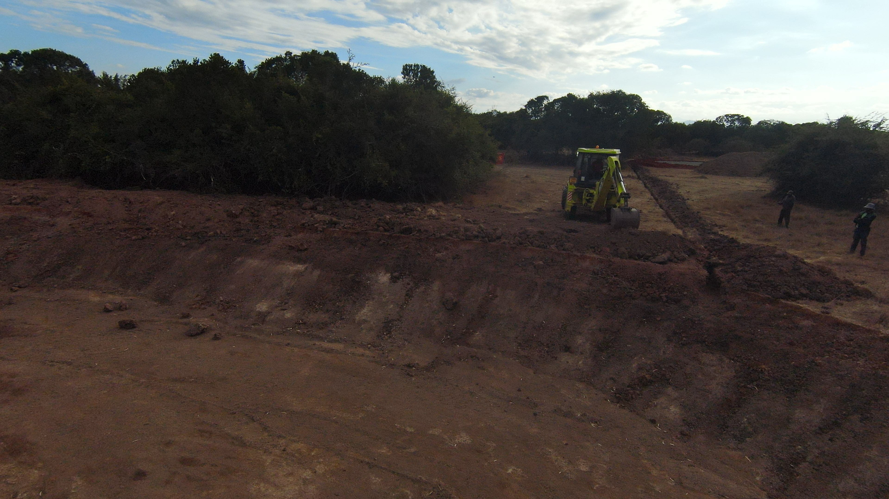
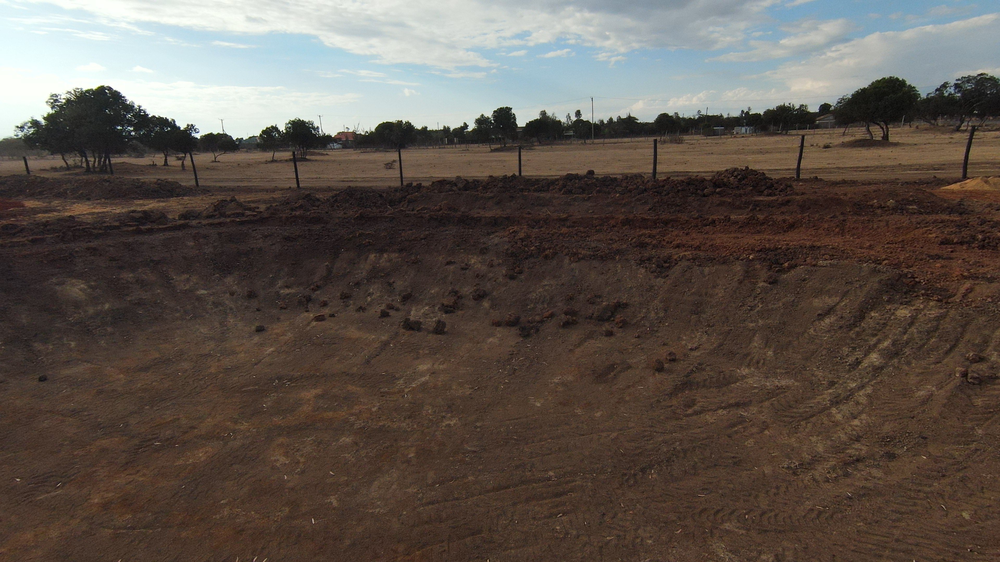
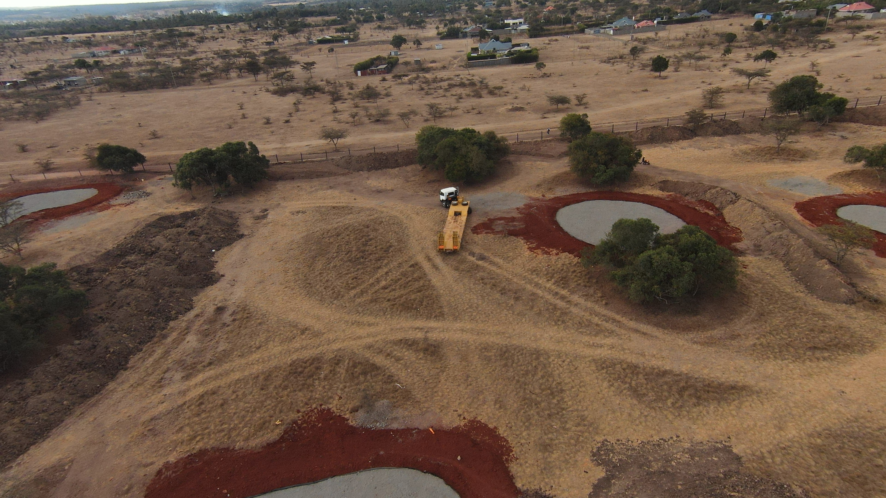
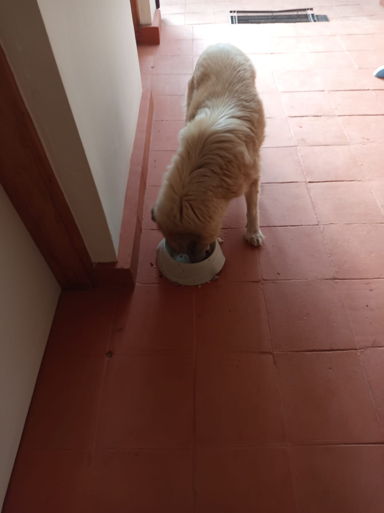

Mucheru World of Golf
Course construction and agronomic engineering operations advanced under the oversight of Mr. Gichuhi and Ken, with site inspection and technical supervision conducted by Carol and Joe Kamau:
- XGMA Backhoe Loader Operations (4.0 Hours): The yellow XGMA backhoe loader returned to site with its original first operator, completing 4.0 operational hours focused on bulk soil grading, embankment leveling, and loading the tractor trailer.
- Dam 1 Embankment Leveling: Soil grading was carried out along the inner perimeter embankments of Dam 1, establishing uniform slopes and grade levels before dam liner placement.
- Soil Haulage Using Tractor Trailer: The green Lima tractor and red tipping trailer hauled murram and bulk soil across the course to backfill and reinforce the Dam 1 embankments.
- Shaping Teebox 15 & Green 6/Green 15 Soil Border: The backhoe loader shaped and leveled the playing platform for Teebox 15. In addition, an elevated separation soil border berm was sculpted between Green 6 and Green 15.
- Compaction of Pumice Stone on Greens 1, 2, 3 & 4: Mechanical compaction was performed across the volcanic pumice foundation layers on Greens 1, 2, 3, and 4 using a walk-behind vibratory roller compactor to lock the sub-base profile into final grade.
- Palm Tree Irrigation Points & Soil Preparation: Irrigation technicians positioned circular watering ring pipes along perimeter trenches toward Chaka Farms Gate A, and crews filled planting holes with a nutrient-rich blend of red topsoil, sand, and manure.
- Green 10 Boundary Adjustment for Apron Room: Ground laborers excavated and shifted the boundary soil mound backward along the fence line behind Green 10 to provide adequate clearance and approach apron space.
- Fleet Demobilization Logistics: A heavy-duty multi-axle low bed transport trailer arrived on site to load and demobilize the blue Sumitomo tracked excavator following the completion of its heavy excavation assignments.
Key Accomplishments — Mucheru World of Golf
Dam 1 embankment soil levels graded ready for liner placement; Teebox 15 platform shaped; Green 6 and Green 15 separation soil border berm formed; Greens 1, 2, 3, and 4 pumice sub-bases compacted; Green 10 apron boundary expanded; palm tree watering points installed; and low bed trailer staged on site for blue excavator evacuation.
Consolidated operational machinery log recording heavy equipment hours and site deployment for Saturday, 19th September 2026:
| Equipment / Machine | Assigned Site Activity | Operating Hours | Hourly Rate (KES) | Total Cost (KES) |
|---|---|---|---|---|
| Backhoe Loader (XGMA) Operated by original first operator |
Dam 1 embankment soil leveling, Teebox 15 shaping, Green 6 / Green 15 soil border formation, and trailer soil loading | 4.00 hrs | KES 6,500.00 | KES 26,000.00 |
| Total Daily Machinery Utilization | 4.00 hrs | — | KES 26,000.00 | |
📌 Fleet Mobilization & Demobilization Log
The XGMA backhoe loader resumed operational duties today with its original first operator, completing 4.0 effective working hours. Concurrently, a commercial low bed trailer arrived on site to load and transport the blue Sumitomo excavator away from the golf course following conclusion of bulk dam excavation tasks.
🎥 Mucheru World of Golf — Site Operations Progress Video (September 19, 2026)
Field video recording capturing the XGMA loader grading Dam 1 embankments, trailer haulage of murram, shaping of Teebox 15 and the Green 6/15 soil border, pumice compaction across Greens 1–4, and Green 10 apron boundary widening.
🎥 Field Recording — Dam 1 Embankment Earthworks
Video capturing backhoe loader operations and ground leveling along the soil embankments of Dam 1 prior to liner installation.
🎥 Field Recording — Dam 1 Embankment Slope & Level Profiling
Detailed footage documenting elevation leveling and slope preparation of Dam 1 embankments with hauled red murram soil.
🎥 Field Recording — Shaping Teebox 15 & Soil Border (Greens 6 & 15)
Field video recording showing precision backhoe shaping on Teebox 15 and earthwork profiling on the divider berm between Green 6 and Green 15.
🎥 Field Recording — Vibratory Compaction of Pumice Stone
Footage capturing the mechanical walk-behind vibratory roller compactor compacting and locking the volcanic pumice layer across the greens.
Comprehensive 18-hole putting green status ledger detailing foundation bases, pumice compaction, contouring, and drainage connections. Highlighting incremental updates on September 19, 2026:
| Green | Current Technical & Agronomic State | Milestone Status |
|---|---|---|
| Green 1 Today | Volcanic pumice stone sub-base mechanically compacted with vibratory roller compactor (Sep 19); red volcanic loam spread; pumice aggregate leveled; subgrade drainage trenches excavated (Sep 15). | Pumice Compacted |
| Green 2 Today | Volcanic pumice stone sub-base mechanically compacted with vibratory roller compactor (Sep 19); red volcanic loam spread; pumice aggregate leveled; subgrade drainage trenches excavated (Sep 15). | Pumice Compacted |
| Green 3 Today | Volcanic pumice stone sub-base mechanically compacted with vibratory roller compactor (Sep 19); red volcanic loam spread; fairway 4 approach leveled; subgrade drainage trenches excavated (Sep 15). | Pumice Compacted |
| Green 4 Today | Volcanic pumice stone sub-base mechanically compacted with vibratory roller compactor across bean-shaped complex (Sep 19); architectural contouring complete (Sep 16); subgrade drainage trenched; fairway playing corridor cleared. | Reshaped & Pumice Compacted |
| Green 5 | Ready. Fully established mature championship putting green turfgrass under active pop-up sprinkler irrigation conditioning. | Ready • Established Turf |
| Green 6 Today | Elevated soil border berm shaped between Green 6 and Green 15 (Sep 19); connecting outfall trenching toward Dam 1 paused awaiting engineering advice from Joe Kamau; riversand added and leveled; red loam spread; subgrade drainage cut. | Soil Border Shaped |
| Green 7 | Subgrade drainage trenching actively excavated across layout grid (Sep 16); white lime grade contours established; sub-base preparation advancing. | Trenched & Subgrade Prep |
| Green 8 | Riversand applied during earlier phases but remains unleveled; red volcanic loam spread; subgrade drainage trenches excavated (Sep 15); surrounding slopes graded. | Riversand Unleveled |
| Green 9 | Architectural shaping completed; red volcanic loam spread; volcanic pumice applied, graded, and compacted; subgrade drainage trenches excavated (Sep 15). | Trenched & Pumice Graded |
| Green 10 Today | Boundary mound shifted back to expand surrounding apron room (Sep 19); apron widened with red volcanic soil (Sep 18); hardcore foundation fractured; perforated PVC drainage lines net-wrapped; volcanic pumice leveled; subgrade trench cut. | Boundary Shifted • Apron Expanded |
| Green 11 | Hardcore sub-base stabilized; separation membrane placed; red volcanic loam spread; volcanic pumice aggregate spread and leveled; subgrade drainage trenches excavated. | Trenched & Pumice Leveled |
| Green 12 | Hardcore stone foundation packed; separation membrane placed; red volcanic loam spread; volcanic pumice aggregate spread and leveled; subgrade drainage trenches excavated. | Trenched & Pumice Leveled |
| Green 13 | Hardcore rock fractured; red volcanic loam spread; volcanic pumice leveled; subgrade drainage trenches excavated (Sep 14). | Trenched & Pumice Leveled |
| Green 14 | Hardcore base and moisture-barrier membrane installed; red volcanic loam spread; volcanic pumice sub-base graded; sole remaining green on course awaiting drainage trench excavation. | Awaiting Final Trenching |
| Green 15 Today | Elevated soil border berm shaped between Green 6 and Green 15 (Sep 19); connecting outfall drainage trench excavated directly to Dam 1 along surveyed stringline (Sep 17); hardcore foundation fractured; membrane placed; pumice graded; drainage cut. | Soil Border Shaped • Connected |
| Green 16 | Hardcore foundation bed fractured and packed; separation membrane installed; red volcanic loam spread; volcanic pumice graded; subgrade drainage trenches excavated (Sep 14). | Trenched & Pumice Graded |
| Green 17 | Drainage trench excavation linking Green 17 directly toward Dam 3 actively dug along surveyed line (Sep 18); hardcore rock grid packed; red loam spread; separation membrane installed; volcanic pumice graded; subgrade trenches cut. | Trenched to Dam 3 |
| Green 18 | Architectural contouring executed: putting green reshaped to organic bean shape (Sep 16); hardcore rock fractured; red volcanic loam spread across foundation and collars; volcanic pumice aggregate leveled; subgrade drainage trenched. | Reshaped (Bean) & Trenched |
Comprehensive 18-hole championship teebox platform audit tracking precision earthwork leveling, structural embankments, and playing corridor alignments. Preserved day-to-day continuity as of September 19, 2026:
| Teebox | Current Technical & Earthwork State | Platform Status |
|---|---|---|
| Tee 1 | Platform leveled, graded, and compacted with mass murram fill during course bulk earthmoving. | Platform Leveled |
| Tee 2 | Foundation fill dumped and platform rough-leveled using 8 tipper truckloads of structural fill. | Fill Placed & Leveled |
| Tee 3 | Foundation fill dumped and platform rough-leveled using 8 tipper truckloads of structural fill. | Fill Placed & Leveled |
| Tee 4 | Championship launch platform precision-graded and leveled to design elevation. | Precision Leveled |
| Tee 5 | Playing platform leveled, compacted, and adjusted to align with fairway playing corridor. | Platform Compacted |
| Tee 6 | Precision leveling and compaction completed along the boundary tree corridor. | Platform Leveled |
| Tee 7 | Finalized. Elevated plateau leveled, compacted, and reinforced with a perimeter protective earth berm along fence line. | Finalized • Berm Complete |
| Tee 8 | Graded, leveled, and contour-adjusted to match fairway transitions and surrounds. | Contour Adjusted |
| Tee 9 | Playing platform leveled and surrounding perimeter ground graded (Sep 1). | Platform Leveled |
| Tee 10 | Graded and compacted platform serving the start of the back-nine playing corridor. | Platform Compacted |
| Tee 11 | Rough shaping, elevation grading, and Backhoe subsoil leveling completed (Sep 7). | Shaped & Graded |
| Tee 12 | Dual platforms established: primary championship tee resized; new forward Ladies' Tee platform constructed (Sep 5). | Dual Platforms Complete |
| Tee 13 | Playing platform completely reshaped, contour-leveled, and perimeter shoulders graded to match fairway transition (Sep 16). | Reshaped & Leveled |
| Tee 14 | Playing platform reshaped, elevation precision-leveled, and protective boundary embankment reinforced (Sep 16). | Reshaped & Leveled |
| Tee 15 Today | Playing platform completely shaped and contour-leveled with backhoe loader (Sep 19); primary irrigation tie-in zone established; main HDPE waterline laid along boundary trench (Sep 15). | Shaped & Leveled |
| Tee 16 | Platform leveled, filled, and surface contours profiled. | Profile Graded |
| Tee 17 | Playing platform widened and expanded to increase launch surface area; filled, compacted, and edge transitions graded (Sep 16). | Widened & Leveled |
| Tee 18 | Championship tee platform leveled; perimeter approach cleared and graded (Sep 1). | Platform Leveled |
Operations Synthesis
Course engineering achieved notable progress with mechanical compaction of volcanic pumice aggregate beds on Greens 1, 2, 3, and 4, stabilizing front-nine putting surfaces. Bulk earthworks resumed with the XGMA backhoe loader (4.0 operating hours) executing Dam 1 embankment leveling prior to lining, precision shaping of Teebox 15, and building a separation soil border berm between Green 6 and Green 15. The Green 10 boundary mound was shifted back to increase apron space, while perimeter irrigation ring installation advanced toward Chaka Farms Gate A. Equipment logistics saw the staging of a low bed transport trailer for the blue Sumitomo excavator demobilization.
Sequential field photography capturing earthmoving machinery, Dam 1 embankment leveling, Teebox 15 shaping, Green 6/15 soil border, pumice compaction, and irrigation installation:

XGMA Backhoe Loader Operations
Yellow XGMA backhoe loader back on site with original operator, grading soil along the fairway and earth berms.

ACE Phantom 4x4 Loader on Site
Lime-green ACE Phantom backhoe loader stationed near earth mounds during course grading operations.

Loading Murram Soil for Dam 1
Backhoe loader loading excavated murram soil into the tractor trailer to haul fill material to Dam 1.

Tractor Hauling Soil to Dam 1
Green Lima tractor and red tipping trailer carrying a full load of murram soil across the course toward Dam 1.

Dam 1 Basin Floor & Grade Levels
Wide view of the leveled Dam 1 basin floor and side slopes prepared for soil embankment profiling.

Dam 1 Embankment Profiling
Earthwork grading along Dam 1 perimeter embankments in progress with the backhoe loader on the upper crest.

Dam 1 Embankment Wall Shaping
Backhoe loader shaping the compacted soil embankment slope of Dam 1, observed by Carol and Joe Kamau.

Prepared Dam 1 Embankment Slope
Leveled and contoured earthen embankment wall of Dam 1 prepared before the installation of dam liners.

Dam 1 Embankment Near Teebox 7
Aerial perspective of the Dam 1 embankment section adjacent to Teebox 7 and the perimeter boundary fence.

Teebox 15 Platform Reshaped
Aerial drone view showing Teebox 15 playing platform shaped and precision-leveled along the boundary fence line.

Soil Border Berm — Green 6 & Green 15
Drone view of the elevated soil border berm separating Green 6 (left) and Green 15 (right), with equipment in the background.

Pumice Stone Compaction Operation
Operator guiding a walk-behind vibratory roller compactor across the leveled volcanic pumice aggregate bed.

Pumice Compaction on Green 4
Vibratory roller compactor finishing the pumice layer on Green 4, supported by manual rake leveling.

Green 4 Compaction in Progress
Aerial drone perspective of the bean-shaped Green 4 complex undergoing vibratory roller compaction.

Green 4 Leveled & Compacted Surface
Aerial overview of Green 4 showing the fully compacted volcanic pumice bed framed by the red soil apron.

Putting Green 9 Compacted Bed
Aerial view of Green 9 with compacted volcanic pumice sub-base, boundary membrane, and graded red apron.

Green 10 Apron Boundary Expansion
Manual excavation crew cutting and setting back the soil mound along the fence line to widen the Green 10 apron.

Palm Tree Irrigation Ring Installation
Circular drip/spray emitter ring pipe placed in a red soil tree planting basin extending toward Chaka Farms Gate A.

Blue Sumitomo Excavator on Site
Aerial view of the blue Sumitomo tracked excavator parked near trees awaiting demobilization.

Low Bed Trailer Arrival
Aerial drone view of the heavy-duty low bed transport trailer parked on site to haul away the blue excavator.

Course Aerial Overview & Fleet Staging
Aerial panoramic shot showing green complexes, red soil aprons, and the transport trailer staged on course.
Chaka Farms
Daily dairy milking operations and livestock management proceeded under the oversight of Kamandau:
- Gross Milk Yield: Total daily dairy cow milk production reached 5.0 Litres (strictly recorded in Litres: 2.5L morning yield and 2.5L evening yield).
-
Rations & Deductions Allocation: A total of 2.0 Litres was deducted from the gross production for authorized rations and staff disbursements:
- • Goat Kids Ration: 1.0 Litre total (0.5L morning + 0.5L evening ration for young stock nourishment).
- • Staff Allocation — Gladys: 0.5 Litres.
- • Staff Allocation — Maasai: 0.5 Litres.
- Net Remaining Farm Balance: Subtracting the 2.0L in total deductions from the 5.0L gross production leaves a net farm balance of 3.0 Litres in storage.
- Morning Cattle Spraying: Acaricide spraying was carried out on dairy cattle in the paddock crush during the morning session for parasite and tick control.
- Livestock Healthcare (Goat Kid Treatment): One young goat kid was identified with a bloated stomach and was promptly administered on-farm veterinary medicine by Kamandau.
Daily Dairy & Livestock Summary
Gross milk yield of 5.0L logged in Litres; young goat stock nourished with morning and evening milk rations; staff allocations disbursed; 3.0L net reserve stored; cattle sprayed in paddock; and bloated goat kid treated with on-farm medicine.
Quantitative daily milking yield audit strictly recorded in Litres, documenting gross cow production, authorized deductions for livestock nourishment and staff allocations, and net remaining cold storage balance for Saturday, 19th September 2026:
| Category / Line Item | Morning (Litres) | Evening (Litres) | Total (Litres) |
|---|---|---|---|
| Gross Dairy Cow Milk Production | 2.5 L | 2.5 L | 5.0 L |
| Goat Kids Ration | -0.5 L | -0.5 L | -1.0 L |
| Staff Allocation (Gladys) | — | -0.5 L | -0.5 L |
| Staff Allocation (Maasai) | — | -0.5 L | -0.5 L |
| Net Farm Milk Balance | 2.0 L | 1.0 L | 3.0 L |
Rations & Deductions Reconciliation
All disbursements (1.0L total for goat kids, 0.5L for Gladys, and 0.5L for Maasai) are deductions drawn directly out of the 5.0L gross milking yield, leaving an audited net farm balance of 3.0 Litres in storage.
Infrastructure materials haulage and civil logistics were coordinated under the supervision of Kinoti:
- Ballast Movement to Chaka Farms Gate A: Ballast stone was loaded from the golf site stockpiles onto the farm tractor trailer and transported directly to Chaka Farms Gate A, where inward construction of the gate entrance is actively progressing.
Materials & Infrastructure Summary
Ballast stone loaded and transported from the golf site to Chaka Farms Gate A, supplying aggregate material for ongoing inward gate construction.
Canine behavioral conditioning and compound grounds upkeep were carried out across the farm estate:
- Kennel Manners & Hygiene: Willy conducted kennel manners drills and verified kennel cleanliness across all dog housing units.
- Paw Command Obedience: Structured obedience routines were performed, focusing on proper response to the "paw" command.
- Goat Kids Socialization Drills: Socialization exercises were conducted with working dogs Logan, Zara, and Coby, introducing them calmly to young goat kids to reinforce gentle behavior around farm livestock.
- General Compound Cleanliness: Margaret and Monica performed compound maintenance, sweeping paths, courtyards, and grounds to ensure general tidiness.
Canine & Compound Summary
Kennel manners and cleanliness maintained; paw command practiced; canine socialization with goat kids completed for Logan, Zara, and Coby; and general estate compound cleanliness maintained.
🎥 Chaka Farms Canine Unit — Socializing with Goat Kids
Field video recording documenting dogs Logan, Zara, and Coby participating in livestock socialization drills with young goat kids overseen by Willy.
Field photography capturing morning cattle parasite spraying in the paddock crush and ballast stone loading for Gate A construction:

Morning Cattle Acaricide Spraying
Farm worker using a knapsack sprayer to spray dairy cattle in the paddock crush for tick and parasite control.

Ballast Loading for Gate A Construction
Worker shoveling ballast rock into the tractor trailer to haul construction materials to Chaka Farms Gate A.
Kabete Residence
Civil works and domestic pet care were carried out at Kabete Residence, with operations overseen and field updates shared by Njoki:
- Fireplace Ground Level Complete: Ground leveling and excavation floor clearance at the outdoor fireplace area were officially completed, leaving an even red earth subgrade ready for structural masonry.
- Stone Clearance on Tarmac Pavement: Clearing work progressed along the tarmac pavement near the car parking area, with building stones neatly stacked along the fence line to open access lanes.
- Offloading Building Stones from Lorry: A commercial lorry delivered a fresh consignment of dressed building stone blocks, which workers manually offloaded and stacked neatly on site.
-
Domestic Pet Care (Ajabu & Resident Cats): Routine feeding and care were provided for all resident pets:
- • Ajabu the Golden Retriever: Fed his regular meal on the residence veranda and taken for an afternoon walk on leash along the paved pathways.
- • Resident Cats (Reo, Mocha & Aiko): Fed their daily meals together from stainless steel bowls in the tiled corridor hallway.
Key Accomplishments — Kabete Residence
Ground level at the outdoor fireplace excavation area now 100% complete; building stones cleared and neatly stacked along the carpark tarmac pavement; fresh building stones offloaded from delivery lorry; and regular domestic feeding and exercise provided for Ajabu and cats Reo, Mocha, and Aiko.
Sequential field photography capturing completed fireplace ground leveling, stone offloading and stacking, and domestic pet care at Kabete Residence:

Fireplace Excavation — Ground Level Complete
Completed excavation floor at the outdoor fireplace, showing cleared red earth subgrade, access ladder, and retaining wall.

Offloading Building Stones from Lorry
Workers manually offloading dressed building stone blocks from the bed of the delivery lorry.

Dressed Building Stones Stack
Neatly stacked building stone masonry blocks delivered and stored on site under tree shade.

Clearing Stones Along Tarmac Pavement
Dressed stones neatly organized and stacked along the tarmac pavement edge near the carparking area.

Domestic Pet Care — Ajabu Feeding
Ajabu the Golden Retriever eating his daily meal from a bowl on the residence veranda.

Ajabu on Afternoon Leash Walk
Ajabu walking on leash along the interlocking brick paved pathway during afternoon exercise.

Domestic Pet Care — Resident Cats
Resident cats Reo, Mocha, and Aiko feeding together from stainless steel bowls in the hallway corridor.